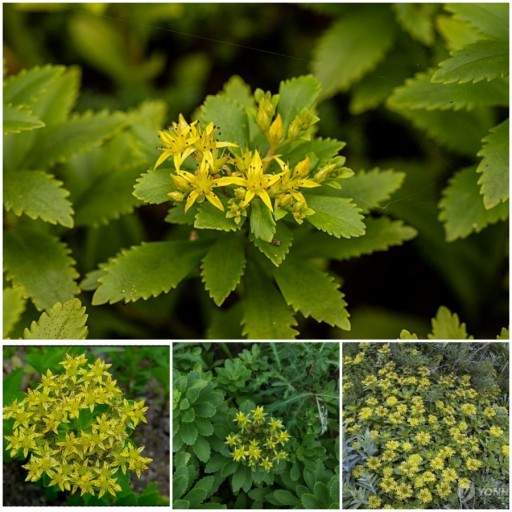
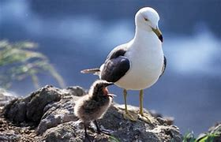

태고의 신비를 간직하고 있는 독도의 자연을 소개해 드립니다.
대한민국의 아름다운 섬, 독도

식물 및 동물
식물군: 독도에는 약 80여 종의 식물이 자라고 있으며, 그 중에는 섬 특유의 희귀종도 포함되어 있습니다. 염분에 강한 해양성 식물들이 주로 자생합니다.
조류: 독도는 여러 종류의 바닷새들의 번식지로 유명합니다. 특히 괭이갈매기, 검은머리갈매기, 바다제비 등의 조류가 많이 서식합니다. 어류 및 해양생물: 독도 주변 해역은 다양한 어종과 해양생물의 서식지입니다. 명태, 오징어, 해삼 등이 풍부하게 서식하고 있습니다.
 